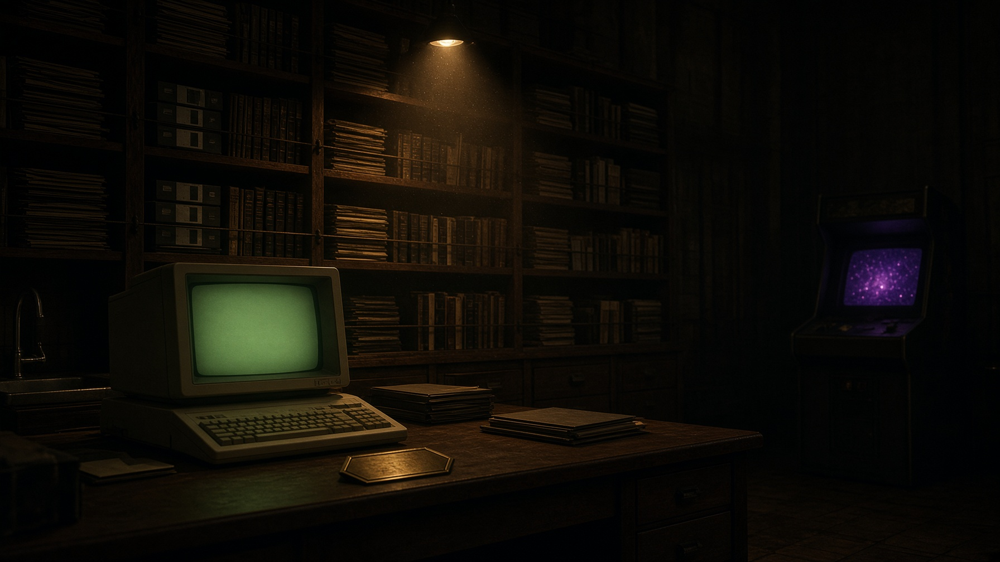

Research · Archive · Preserve
Five threads that all led to the same place: the cypherpunks, the Extropians, the digital-cash attempts, the crypto wars, and the arcade years, traced on one timeline down to Bitcoin.
A classified, hash-sealed reading room. Every record has an accession number, a class, and a SHA-256 vault seal.
Reading room · CRT and stacks
find ›
/
author:szabotag:remailersyear:1990-2000class:3has:offlinein:text trusted third party
- What
- 241 records across those five threads, hash-verified and hosted in full.
- Why
- The mailing lists and mirrors they live on now could go dark any day, so we keep our own copies, connected.
- How
- Search above, browse the timeline, or open any thread's own room from the menu. Verify a seal on any record.
···
records catalogued
···
hosted copies in vault
···
offline-ready
···
months of boards linked